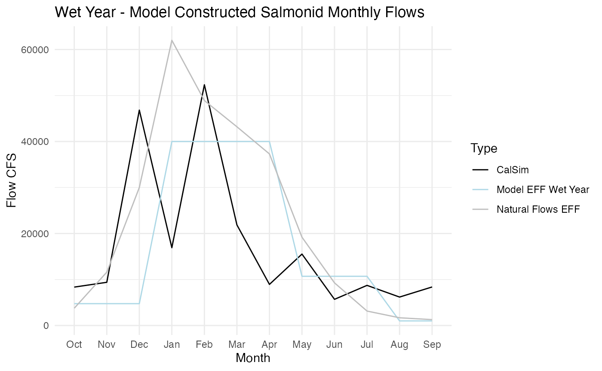

Functional Flow Analysis
EFF.RmdIncorperating Effective Functional Flows into R2R
The Reorienting to Recovery Structured Decision Making group proposed a effective functional flow (EFF) scenario. To this date, there is no available CalSIM EFF run so we cannot model full EFF on the entire system. This document outlines our approach to piloting a EFF on the Sacramento River.
Pilot EFF Approach on the Sacramento River
The R2R technical team is working collaboratively with a flow sub group to develop a EFF hydrograph for the Sacramento River. We are building off of the Nature Conservancy’s Natural Flows Database to develop a wet and dry year monthly EFF hydrographs. We will compile these wet and dry year EFF into a 20 year synthetic timeserries based on the historical water year types between 1980 and 2000, the current R2R model timeframe.
Planned Improvements and Next Steps
The technical team is working to review existing literature on pulse flows and expand pulse flow routing logic in the model. This will increase the granularity of flow related model effects despite the monthly timestep of our CalSim flow input data and the model.
The technical team is also working with MBK to incoperate EFF logic into a CalSIM Run that we can use directly in the model.
What is an EFF
California’s EFF include 5 distinct components of a natural flow regime: fall pulse flows, wet season peak flows, wet season base flows, spring recession flows, and dry season baseflows.

For more information on EFF please refer to additional sources:
How can we tailor EFF to our system
EFF are hypothesized to be the best flows for salmon in our historical system. However, our system is highly managed so we may need to alter EFF slightly from their historical values to maximize benefit to salmon.
The R2R techncial team developed proposed EFF monthly flows by combining the Natural Flows Database values with critical flow to survival migratory thresholds on the Sacramento River (from Michel 2021).
Wet Year EFF
The table below shows monthly flow CFS for a wet year model EFF on the Sacramento River. This table was constructed using the Natural Flows database and model survival thresholds.
| month | flow_cfs | description |
|---|---|---|
| Jan | 62000 | Wet season base flow + Peak Magnitude flows, based on wet year monthly Natural Flows |
| Feb | 62000 | Wet season base flow + Peak Magnitude flows, based on wet year monthly Natural Flows |
| Mar | 35000 | Wet season base flow, based on wet year monthly Natural Flows |
| Apr | 35000 | Wet season base flow, based on wet year monthly Natural Flows |
| May | 10700 | Spring recession flow (10,700 for mig surv ~50%) |
| Jun | 10700 | Spring recession flow (10,700 for mig surv ~50%) |
| Jul | 7500 | Half way between Enhanced Survival dry season baseflow and mig surv 50% threshold |
| Aug | 4308 | Enhanced Survival Dry season baseflow (keep migratory surv at ~20%) |
| Sep | 1280 | All fall runs juves have left system, use Natural Flows dry season base flow |
| Oct | 3760 | Dry season baseflow, add in some fall pulse flows |
| Nov | 11600 | Fall pulse flow, based on wet year monthly Natural Flows |
| Dec | 35000 | Begin wet season baseflow and medium flow, based on wet year monthly Natural Flows |
The plot below shows the CalSIM modeled flows for the Sacramento River of an existing representative wet year: 1996. 1996 has the median water year index as provided by DWR out of all the “Wet” and “Above Normal” years within our model time frame.

The table below shows the annual total volume of water needed for each flow scenario. The wet year EFF uses more water than the Natural Flows database EFF and then the representative CalSIM year.
| Scenario | Annual Acre Ft Water |
|---|---|
| Natural flows Database flows | 16380382 |
| Proposed Model EFF | 16834249 |
| calsim | 12625023 |
Dry Year EFF
The table below shows monthly flow CFS for a dry year model EFF on the Sacramento River. This table was constructed using the Natural Flows database and model survival thresholds.
| month | flow_cfs | description |
|---|---|---|
| Jan | 14100 | Wet season base flow + Peak Magnitude flows, based on dry year monthly Natural Flows |
| Feb | 14100 | Wet season base flow + Peak Magnitude flows, based on dry year monthly Natural Flows |
| Mar | 9560 | Wet season base flow, based on dry year monthly Natural Flows |
| Apr | 9560 | Wet season base flow, based on dry year monthly Natural Flows |
| May | 4908 | Spring recession flow (keep migratory surv at ~20%) |
| Jun | 4708 | Spring recession flow (keep migratory surv at ~20%) |
| Jul | 4508 | Half way between dry season baseflow and mig surv 20% threshold |
| Aug | 4308 | Dry season baseflow 1 (keep migratory surv at ~20%) |
| Sep | 564 | All fall runs juves have left system, use Natural Flows dry season base flow |
| Oct | 2230 | Dry season baseflow with some fall pulse flow |
| Nov | 6060 | Add fall pulse flow, based on dry year monthly Natural Flows |
| Dec | 10100 | Begin dry season baseflow and medium flow, based on dry year monthly Natural Flows |
The plot below shows the CalSIM modeled flows for the Sacramento River of an existing representative dry year: 1987 1987 has the median water year index as provided by DWR out of all the “Critical”, “Dry”, and “Below Normal” years within our model time frame.

The table below shows the annual total volume of water needed for each flow scenario. The dry year EFF uses less water than the Natural Flows database EFF and then the representative CalSIM year.
| Scenario | Annual Acre Ft Water |
|---|---|
| Natural flows Database flows | 4967965 |
| Proposed Model EFF | 5113761 |
| calsim | 6208945 |